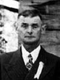
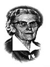

notre ancêtre de la 7ième génération
fiche familiale
 |
Isaïe Baudoin Beaudoin décède à l'âge de 68 ans. Naissance le 3 mars 1871 à Ste-Cécile de Masham (La Pêche) Baptême le 5 mars 1871 à Ste-Cécile de Masham (La Pêche) Parrain son grand-père maternel Isaïe Brazeau, marraine Angèle Galarneau sa grand-mère paternelle. Occupation: Cultivateur. Il s'installa sur la terre voisine de la terre paternelle dans le rang St-Luc maintenant "Chemin de la Prairie" à Ste-Cécile de Masham, puis en 1924 il déménagea sur la terre à Hull, sise au nord du lac Leamy sur la rive ouest de la rivière Gatineau à un mille de l'embouchure de la rivière Des-Outaouais. Il passa ses derniers jours à Masham chez sa belle-fille Aurore Barnabé où il y décéda. Décès le 7 janvier 1940 à Ste-Cécile de Masham (La Pêche)Sépulture à Ste-Cécile de Masham (La Pêche) Père: François-Xavier Baudoin Beaudoin Mère: Marie-Clothilde Brazeau (sa famille) |
| |
Mariage le 26 avril 1893 à Ste-Cécile de Masham (La Pêche) Âge de l'époux 22 ans, âge de l'épouse 20 ans. 1ère épouse: Catherine Renaud décède à l'âge de 45 ans. Naissance le 15 juin 1872 à Ste-Cécile de Masham (La Pêche) Baptême le 30 juin 1872 à Ste-Cécile de Masham (La Pêche) Parrain François Philip, marraine Delphine Philip. Décès le 18 mars 1918 à Ste-Cécile de Masham (La Pêche) Décédée de la grippe Espagnol en même temps que son fils Isidore et de ses belles-soeurs Vénérance Renaud et Hedwige Martineau. Sépulture à Ste-Cécile de Masham (La Pêche)Père: Samuel-Anselme Renaud Mère: Ann-Eléonor O'Ryan (Ryan) (sa famille) |
Portrait de la famille d'Isaïe Beaudoin à Ste-Cécile de Masham le 20 août 1944.

de gauche à droite rangée à l'avant :
Éloi Sincennes et Marie, soeur Cécile, Pricille Renaud (2è épouse), père Siméon, soeur Jeanne, Bertha et Cléophas Gauvreau,soeur Annette
rangée à l'arrière :
Domina et Alda Martin, Prosper et Maria Duhaime, Liguori et Rita Piché, Antoine et Germaine Henri, Herménégilde et Dora Guertin
de gauche à droite rangée à l'avant :
Éloi Sincennes et Marie, soeur Cécile, Pricille Renaud (2è épouse), père Siméon, soeur Jeanne, Bertha et Cléophas Gauvreau,soeur Annette
rangée à l'arrière :
Domina et Alda Martin, Prosper et Maria Duhaime, Liguori et Rita Piché, Antoine et Germaine Henri, Herménégilde et Dora Guertin
|   |
Enfant 1 Domina Beaudoin décède à l'âge de 69 ans. Naissance le 15 janvier 1894 à Ste-Cécile de Masham (La Pêche) Décès le 5 avril 1963 à Hull. Mariage le 6 octobre 1925 à Ste-Cécile de Masham (La Pêche) Conjointe: Alda Martin n. en 1900 d. 2 mars 1961. (sa famille) |
 |
Enfant 2 Siméon Beaudoin décède à l'âge de 66 ans. Naissance le 6 mars 1895 à Ste-Cécile de Masham (La Pêche) Décès le 23 décembre 1961 à Val D'Or. Funérailles 26 déc 1961 à Immaculée-Conception de Rouyn-Noranda Funérailles 28 déc 1961 à Sacré-Coeur d'Ottawa Sépulture au cimetière Notre-Dame de Hull. Occupation: Père prédicateur. Père Oblat de Marie-Immaculée de 1919 à 1961, dont 42 ans de vie sacerdotale et 38 ans de profession religieuse. Au début de septembre 1939 il passa quelques jours chez ses frères Antoine et Herménégilde à Duparquet. Il a bâtit la Maison des Retraites Fermées de Rouyn dont l'ouverture avait lieu en 1948. Il décéda à l'Hôpital de Val D'or. |
  |
Enfant 3 Bertha Beaudoin décède à l'âge de 95 ans. Naissance le 7 novembre 1896 à Ste-Cécile de Masham (La Pêche) Décès le 4 juin 1992 à Gatineau. Mariage le 9 août 1920 à Ste-Cécile de Masham (La Pêche) Conjoint: Cléophas Gauvreau n. 14 mars 1886 d. 5 mars 1975. (sa famille) |
Enfant 4 Isidore Beaudoin
décède à l'âge de 20 ans.
Naissance le 1er mars 1898 à Ste-Cécile de Masham (La Pêche)
Décès le 18 mars 1918 à Ste-Cécile de Masham (La Pêche)
Décédé de la grippe Espagnol en même temps que sa mère.
-------------------------------------------------------------------------------
 |
Enfant 5 Herménégilde Beaudoin décède à l'âge de 73 ans. Naissance le 23 janvier 1900 à Ste-Cécile de Masham (La Pêche) Décès le 27 août 1973 à Hull. Mariage le 30 avril 1924 à New-Liskeard, ON Conjointe: Dora-Ernestine Guertin n. 30 avril 1904 d. 13 décembre 1989. (sa famille) |
Enfant 6 Archille Beaudoin
décède à la naissance.
Naissance le 23 janvier 1900 à Ste-Cécile de Masham (La Pêche)
Baptême le 23 janvier 1900 à Ste-Cécile de Masham (La Pêche)
Décès le 23 janvier 1900 à Ste-Cécile de Masham (La Pêche)
Sépulture à Ste-Cécile de Masham (La Pêche)
Frère jumeau d'Herménégilde.
-------------------------------------------------------------------------------
Enfant 7 Raymond Beaudoin
décède à la naissance.
Naissance en 1901 à Ste-Cécile de Masham (La Pêche)
Décès en 1901 à Ste-Cécile de Masham (La Pêche)
-------------------------------------------------------------------------------
 |
Enfant 8 Prosper Beaudoin décède à l'âge de 82 ans. Naissance le 25 novembre 1903 à Ste-Cécile de Masham (La Pêche) Décès le 7 décembre 1985 à Hull. Sépulture au cimetière Notre-Dame de Gatineau Mariage le 23 juin 1936 à St-Joseph de Hull. Conjointe: Maria Duhaime ===>> (sa famille) décède à l'âge de 98 ans. Naissance le 15 février 1910 à Mattawa, ON Décès le 9 juin 2008 à la résidence Champlain de Hull. |
  |
Enfant 9 Marie Beaudoin décède à l'âge de 80 ans. Naissance le 26 août 1905 à Ste-Cécile de Masham (La Pêche) Décès le 13 février 1986 à Hull. Mariage le 3 juillet 1924 à Ste-Cécile de Masham (La Pêche) Conjoint: Éloi Sincennes n. 20 décembre 1900 d. 9 janvier 1971. (sa famille) |
| |
Enfant 10 Cécile Beaudoin décède à l'âge de 97 ans. Naissance le 31 janvier 1907 à Ste-Cécile de Masham (La Pêche) Décès le 17 mai 2004 à la Maison-Mère des Soeurs de la Providence, 5655 rue De Salaberry, Montréal. Sépulture le 19 mai 2004 au cimetière de la paroisse de la Présentation à Dorval. Occupation: Religieuse, infirmière. Révérende Soeur Siméon du Sauveur, Fille de la Sagesse de 1925 à 2004. |
 |
Enfant 11 Liguori Beaudoin décède à l'âge de 61 ans. Naissance le 14 août 1908 à Ste-Cécile de Masham (La Pêche) Décès le 1er avril 1970 à Hull. Mariage le 26 novembre 1934 à Cathédrale d'Ottawa conjointe: Rita Piché n. 1er juillet 1911 d. 10 décembre 2000. (sa famille) |
| |
Enfant 12 Jeanne Beaudoin décède à l'âge de 68 ans. Naissance le 24 février 1911 à Ste-Cécile de Masham (La Pêche) Décès le 23 septembre 1979 à l'Hôtel-Dieu de Montréal. Sépulture le 26 septembre 1979 au cimetière de la paroisse de la Présentation à Dorval. Révérende Soeur Gemma de Montfort, Fille de la Sagesse de 1930 à 1979, elle a enseignée plusieurs années au Pensionnat de Dorval. |
  |
Enfant 13 Antoine Beaudoin décède à l'âge de 84 ans. Naissance le 18 avril 1913 à Ste-Cécile de Masham (La Pêche) Décès le 21 décembre 1997 à Rouyn-Noranda. Mariage le 14 mai 1936 à St-Albert-le-Grand de Duparquet. Conjointe: Germaine Henri n. 29 octobre 1913 d. 18 avril 2009 (sa famille) |
|  |
Mariage le 19 octobre 1922 à Ste-Cécile de Masham (La Pêche) Âge de l'époux 51 ans, âge de l'épouse 42 ans. 2ème épouse: Priscille Renaud Veuve de Cyprien Barnabé ===>> (sa famille) décède à l'âge de 84 ans. Naissance le 5 juin 1880 à Ste-Cécile de Masham (La Pêche) Décès le 7 décembre 1964 à Ste-Cécile de Masham (La Pêche) Père: Joseph Renaud Mère: Philonise Coderre (sa famille) |
 |
Enfant 14 Annette Beaudoin décède à l'âge de 89 ans. Naissance le 17 novembre 1923 à Ste-Cécile de Masham (La Pêche) Décès le 24 décembre 2012 à Gatineau. Funérailles: 12 janvier 2013 à la Coopérative Funéraire de L'Outaouais de Gatineau. Pofession: Infirmière licenciée. Révérende Soeur Prescille de Marie, Fille de la Sagesse du 2 août 1940 à 1973. Mariage le 24 février 1974 à Clarence-Crick, Ont. 1er conjoint: Raymond Laverdure Naissance le 11 février 1923 à Valcourt. Décès le 1er mars 1984 à Hull. Sépulture au cimetière St-Rédempteur de Hull. Révérend Frère jusqu'en 1973. Mariage le 2 mai 1987 à Hull. 2ème conjoint: Maurice Landry Naissance le 14 avril 1921 à Chicoutimi. Décès le 3 juillet 2007 à Hull. |
| Enfant 15 Yvette Beaudoin décède à l'âge de 16 ans. Naissance le 17 novembre 1923 à Ste-Cécile de Masham (La Pêche) Décès le 25 novembre 1939 à Ste-Cécile de Masham (La Pêche) Soeur jumelle d'Annette |
| Enfant 16 Éloi Beaudoin décède à l'âge de 8 ans. Naissance le 17 novembre 1924 à Ste-Cécile de Masham (La Pêche) Décès le 23 octobre 1933 à Hull. Sépulture au cimetière St-Rédempteur,Hull. |